Live widgets for your Wayland desktop.Wayland masaüstün için canlı widget'lar.
Clocks, system monitors, a music player, weather and more, placed on your desktop with a real editor. One Quickshell config, no daemon, nothing else to install.Saatler, sistem monitörleri, müzik oynatıcı, hava durumu ve dahası; gerçek bir düzenleyiciyle masaüstüne yerleşir. Tek bir Quickshell yapılandırması, arka plan servisi yok, başka kurulum yok.
curl -fsSL https://raw.githubusercontent.com/lunanoir21/desktop-widget-control/main/install.sh | sh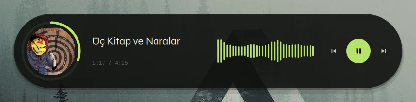
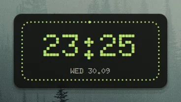
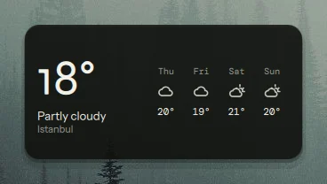
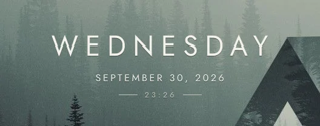
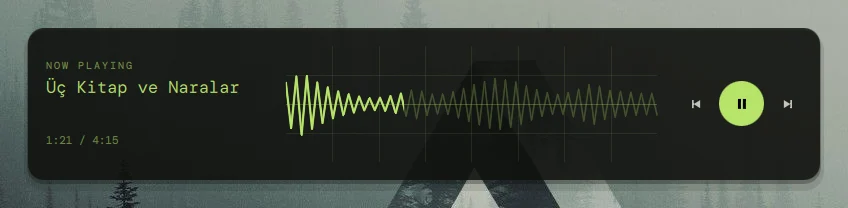
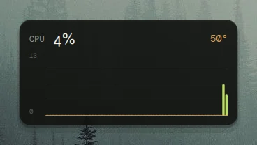
Everything a desktop widget should beBir masaüstü widget'ının olması gereken her şey
Small, cheap to run, and yours to rearrange.Küçük, çalıştırması ucuz ve düzenini değiştirmesi senin elinde.
16 modules16 modül
Six clocks, five system monitors, a music player, calendar, weather, pomodoro and notes. Most come in several sizes.Altı saat, beş sistem monitörü, müzik oynatıcı, takvim, hava durumu, pomodoro ve notlar. Çoğu birkaç boyutta.
A real editorGerçek bir düzenleyici
A library with live thumbnails, drag and drop onto a snapping grid, resize by preset, and an inspector built from each module's options.Canlı önizlemeli kütüphane, ızgaraya yapışan sürükle-bırak, hazır boyutlarla yeniden boyutlandırma ve her modülün seçeneklerinden üretilen panel.
StylesStiller
One option swaps the whole look: a dotted ring clock, btop-style graphs, a pill or oscilloscope music player, a lock-screen poster.Tek bir seçenek bütün görünümü değiştirir: noktalı halka saat, btop tarzı grafikler, hap ya da osiloskop müzik oynatıcı, kilit ekranı posteri.
Nine themesDokuz tema
Try them up there: this page follows the theme you pick, screenshots included. The tests keep text readable in every one.Yukarıda dene: bu sayfa seçtiğin temayı izler, ekran görüntüleri dahil. Testler her temada yazının okunaklı kalmasını denetler.
Cheap to runÇalıştırması ucuz
Data sources run only while a widget needs them and are shared. About 0.5% of one core with all sixteen on screen.Veri kaynakları yalnızca bir widget gerektiğinde çalışır ve paylaşılır. On altısı ekrandayken tek çekirdeğin yaklaşık %0,5'i.
Scriptable, independentBetiklenebilir, bağımsız
Everything the editor does is an IPC call, the layout is one JSON file, and the fonts are bundled. It needs nothing from the rest of your shell.Düzenleyicinin yaptığı her şey bir IPC çağrısı, düzen tek bir JSON dosyası, fontlar pakette. Shell'inin geri kalanından hiçbir şey istemez.
Press a key, edit the desktopBir tuşa bas, masaüstünü düzenle
- Drag a card from the library onto the desktop, or double-click it.Kütüphaneden bir kartı masaüstüne sürükle ya da çift tıkla.
- Widgets snap to cells and never land on top of each other.Widget'lar hücrelere yapışır, üst üste binmez.
- The panels slide out of the way while you drag, and the inspector opens on the side away from the widget you are editing.Sürüklerken paneller yoldan çekilir; özellik paneli düzenlediğin widget'ın karşı tarafında açılır.
- Centre a widget on the screen with one button.Tek düğmeyle bir widget'ı ekranın ortasına al.
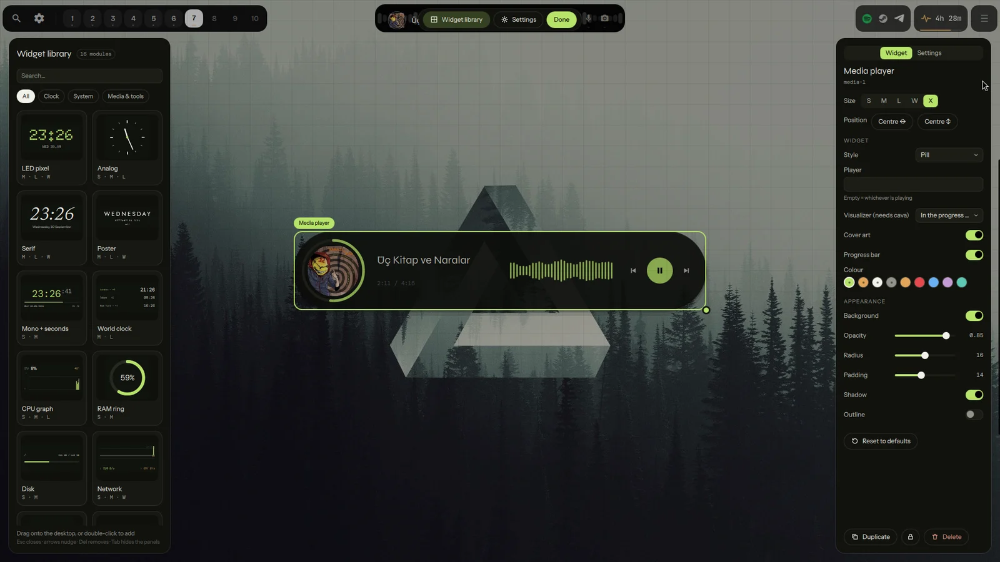
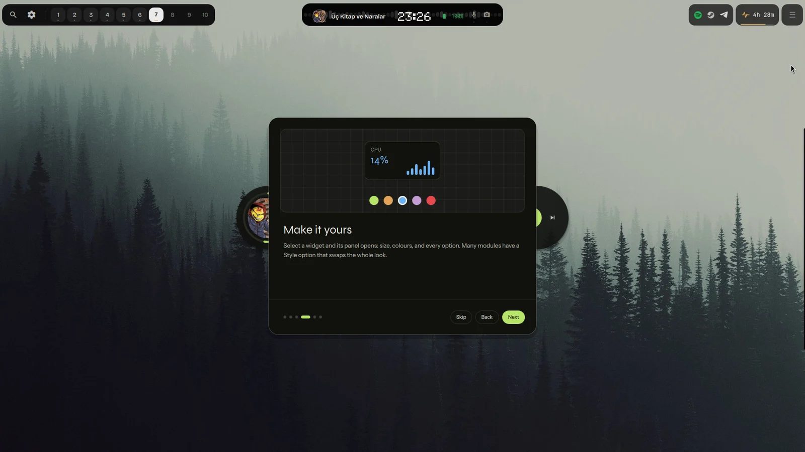
A short first-run tourKısa bir ilk kurulum turu
The first time it starts, a six-step tour shows how to open the editor, fill the desktop, change a widget and pick a theme. Skip it any time; dwc tour brings it back.İlk açılışta altı adımlık bir tur düzenleyiciyi nasıl açacağını, masaüstünü nasıl dolduracağını, bir widget'ı nasıl değiştireceğini ve tema seçmeyi gösterir. İstediğin zaman atla; dwc tour geri getirir.
Every module, every styleHer modül, her stil
Shots of the real thing, one widget at a time. Change the theme at the top and they follow.Gerçeğinden görüntüler, her seferinde tek widget. Üstten temayı değiştir, görüntüler de değişir.
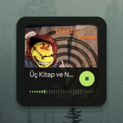
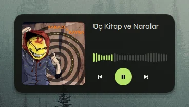
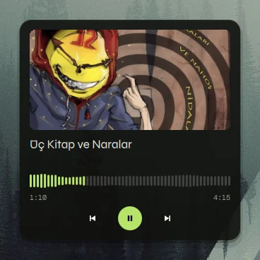
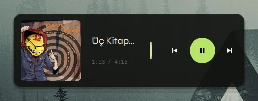
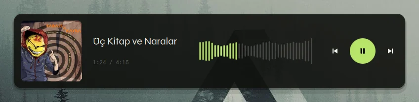
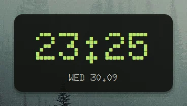
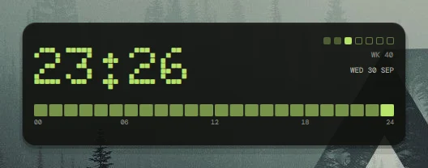
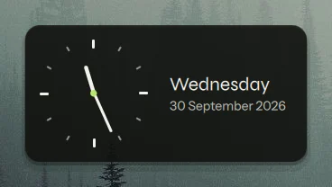
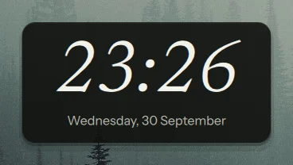
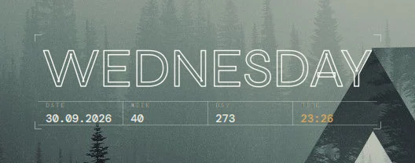
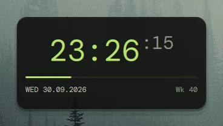
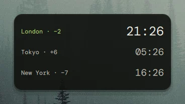
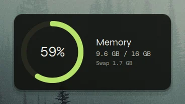
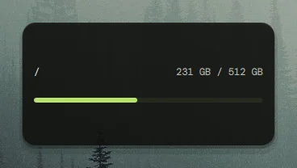
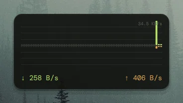
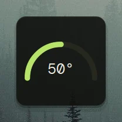
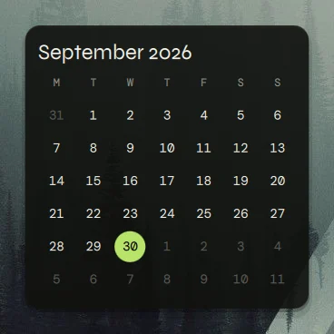
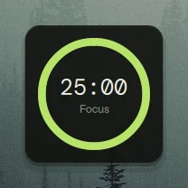
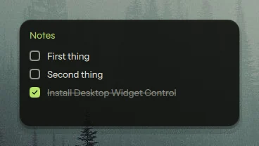
Sixteen modulesOn altı modül
Sizes are grid presets: S 4×4 cells, M 8×4, L 8×8, W 12×4, X 20×4.Boyutlar ızgara hazırlarıdır: S 4×4 hücre, M 8×4, L 8×8, W 12×4, X 20×4.
Dot-matrix clock: classic, a ring that fills with the seconds, or a day strip.Nokta-matris saat: klasik, saniyeyle dolan halka ya da gün şeridi.
Vector face, optional second hand, date beside it.Vektör kadran, isteğe bağlı saniye ibresi, yanında tarih.
A large italic time, once a minute.Büyük italik saat, dakikada bir.
Lock-screen look: classic, cut letters, or an outlined sign.Kilit ekranı görünümü: klasik, kesik harfler ya da çizgili afiş.
Time, a seconds bar, date and week number.Saat, saniye çubuğu, tarih ve hafta numarası.
Up to four time zones with their offsets.En çok dört saat dilimi ve farkları.
btop-style bars coloured by load, or a line.Yüke göre renkli btop tarzı çubuklar ya da çizgi.
Memory as a ring, swap beside it.Bellek halka olarak, yanında swap.
A bar per mount point, warns when full.Bağlama noktası başına çubuk, dolunca uyarır.
Download above, upload below a centre line.Orta çizginin üstünde indirme, altında yükleme.
A half-circle gauge for the CPU sensor.CPU sensörü için yarım daire gösterge.
Any MPRIS player, with a live cava spectrum in the progress bar; card, wide strip, pill or oscilloscope.Herhangi bir MPRIS oynatıcı, ilerleme çubuğunda canlı cava spektrumu; kart, geniş şerit, hap ya da osiloskop.
A month grid, today's date beside it.Ay ızgarası, yanında bugünün tarihi.
Open-Meteo forecast; pick a country and a city.Open-Meteo tahmini; ülke ve şehir seç.
Focus and break timer; click the ring.Odak ve mola sayacı; halkaya tıkla.
A checklist you can tick on the desktop.Masaüstünde işaretleyebileceğin liste.
What it costsMaliyeti
Measured with tools/measure.py on one 1080p laptop, 20 seconds after start. The process alone, not the compositor or the GPU.Tek bir 1080p dizüstünde tools/measure.py ile, başladıktan 20 saniye sonra ölçüldü. Yalnızca süreç; compositor ya da GPU dahil değil.
| ScenarioSenaryo | CPU | RSS |
|---|---|---|
| first-run layout, 5 widgetsilk açılış düzeni, 5 widget | 0.2 % | 254 MB |
| all modules at oncetüm modüller aynı anda | 0.5 % | 263 MB |
InstallKurulum
Pick whichever suits you. The one-liner links it in, adds an app-menu entry and, if you agree, the Hyprland autostart and a key.Sana uygun olanı seç. Tek satır onu yerleştirir, uygulama menüsüne giriş ekler ve istersen Hyprland otomatik başlatmasını ve bir tuşu ekler.
curl -fsSL https://raw.githubusercontent.com/lunanoir21/desktop-widget-control/main/install.sh | sh
Needs Quickshell. Run it again any time to update; install.sh --uninstall removes everything it added (your layout stays).Quickshell gerekir. Güncellemek için istediğin zaman yeniden çalıştır; install.sh --uninstall eklediği her şeyi kaldırır (düzenin kalır).
omarchy plugin add https://github.com/lunanoir21/desktop-widget-control-omarchy.git --enable
The Omarchy package is a thin wrapper around this project, like my other plugins.Omarchy paketi bu projenin ince bir sarmalayıcısıdır, diğer eklentilerim gibi.
git clone https://github.com/lunanoir21/desktop-widget-control cd desktop-widget-control/packaging && makepkg -si
git clone https://github.com/lunanoir21/desktop-widget-control cd desktop-widget-control quickshell -p . # try it, nothing is installed ./install.sh # or install it for your user
ScriptableBetiklenebilir
dwc toggle # open / close the editor (bind this to a key) dwc add media X # an extra-wide music player dwc set media-1 look '"pill"' # change its style dwc center media-1 # put it in the middle of the screen dwc theme cycle # next theme dwc list # the layout as JSON